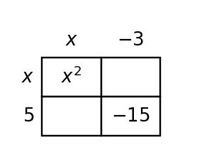
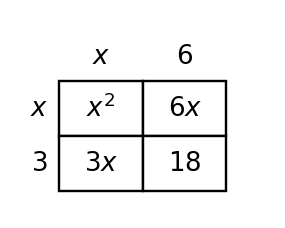

1. Use the table to compare $(x-2)(x+3)$ and $x^2+x-6$ at the listed inputs. What does the agreement suggest about the two expressions, and which polynomial operation confirms it?
| x | $(x-2)(x+3)$ | $x^2+x-6$ |
|---|---|---|
| -1 | -6 | -6 |
| 1 | -4 | -4 |
| 3 | 6 | 6 |
2. A student simplifies $(2x^2+5x-1)-(3x^2-x+4)$ as $-x^2+4x+3$. Identify the subtraction error and give the correct result.
3. Simplify $(3x^2 - 2x + 4)+(-x^2 + 3x - 2)$.
4. Simplify $(3x^2 + 4x - 1)-(x^2 - 4x + 2)$.
5. Multiply $-3(x^2 - 2x + 3)$.
6. Use the table to compare $(x-7)(x-2)$ and $x^2 - 9x + 14$. What polynomial product is represented?
| x | $(x-7)(x-2)$ | $x^2 - 9x + 14$ |
|---|---|---|
| -1 | 24 | 24 |
| 0 | 14 | 14 |
| 2 | 0 | 0 |
7. Complete the missing cell products in the area model, then combine like terms to expand the product.

8. Use the table and multiplication to verify that $(x+2)(x+2)$ simplifies to $x^2 + 4x + 4$.
| x | $(x+2)(x+2)$ | $x^2 + 4x + 4$ |
|---|---|---|
| -1 | 1 | 1 |
| 0 | 4 | 4 |
| 2 | 16 | 16 |
9. A student combines $3x^2+4x+2x^2$ as $9x^2$. Explain the error and simplify correctly.
10. Simplify $(4x^2 - 3x + 4)+(-x^2 + 4x - 3)$.
11. Simplify $(3x^2 + 2x - 1)-(2x^2 - 4x + 2)$.
12. Multiply $2(x^2 - x + 3)$.
13. The table gives matching outputs for $(x+3)(x+2)$ and $x^2 + 5x + 6$. Confirm the equivalence algebraically.
| x | $(x+3)(x+2)$ | $x^2 + 5x + 6$ |
|---|---|---|
| -1 | 2 | 2 |
| 0 | 6 | 6 |
| 2 | 20 | 20 |
14. Use the complete area model to write the polynomial product in expanded form.

15. The table gives matching outputs for $(x-2)(x-1)$ and $x^2 - 3x + 2$. Confirm the equivalence algebraically.
| x | $(x-2)(x-1)$ | $x^2 - 3x + 2$ |
|---|---|---|
| -1 | 6 | 6 |
| 0 | 2 | 2 |
| 2 | 0 | 0 |
16. A student expands $-2(x^2-3x+4)$ as $-2x^2-6x+8$. Correct the distribution.
17. Simplify $(2x^2 - 2x + 4)+(-x^2 + 2x - 4)$.
18. Simplify $(3x^2 + 3x - 1)-(x^2 - 4x + 2)$.
19. Solve the system $y=x+5$ and $y=-2x-1$. State the solution.
20. Solve the system $y=3x+1$ and $y=-x+5$. State the solution.
21. Solve the system $y=0.5x$ and $y=-x+6$. State the solution.
22. Write the linear equation represented by the table. Identify the rate of change and starting value.
| x | y |
|---|---|
| 0 | 5 |
| 1 | 3 |
| 2 | 1 |
23. Write the linear equation represented by the table. Identify the rate of change and starting value.
| x | y |
|---|---|
| 0 | -2 |
| 2 | 1 |
| 4 | 4 |
24. Write the linear equation represented by the table. Identify the rate of change and starting value.
| x | y |
|---|---|
| 0 | -4 |
| 1 | -1 |
| 2 | 2 |